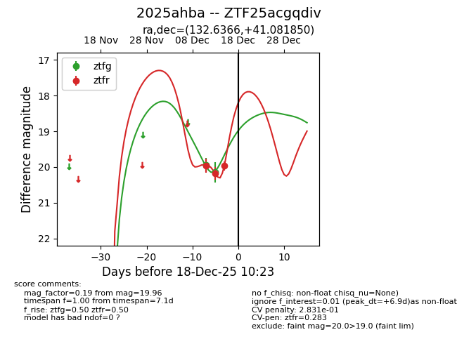
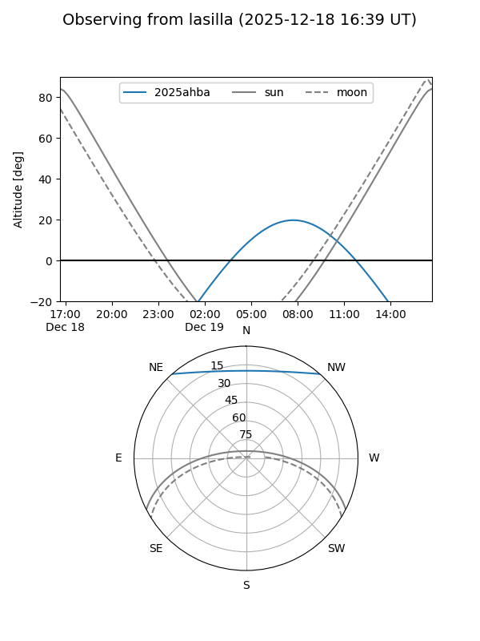
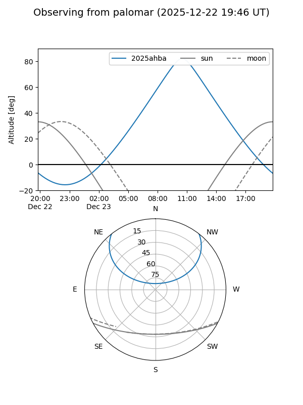
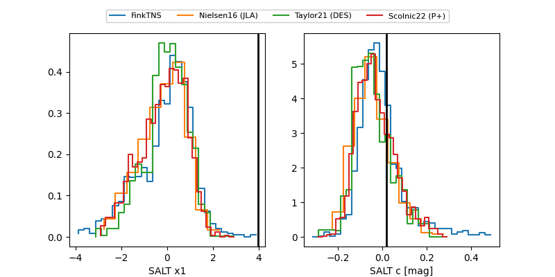

2025ahba
Target 2025ahba at 2025-12-22 18:21
Aliases and brokers:
FINK: fink-portal.org/ZTF25acgqdiv
Lasair: lasair-ztf.lsst.ac.uk/objects/ZTF25acgqdiv
ALeRCE: alerce.online/object/ZTF25acgqdiv
TNS: wis-tns.org/object/2025ahba
YSE: ziggy.ucolick.org/yse/transient_detail/2025ahba
alt names
ZTF25acgqdiv (ztf,fink_ztf)
2025ahba (tns,yse)
Coordinates:
equatorial (ra, dec) = 132.6366,+41.08185
equatorial (HMS+DMS) = 08:50:32.78,+41:04:54.66
galactic (l, b) = (180.5974,+39.25737)
Flags:
Photometry:
last ztfg=20.30, ztfr=20.21
2 ztfg, 5 ztfr detections
Lightcurve

Visibility


Additional plots
